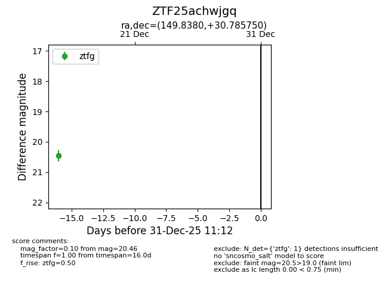
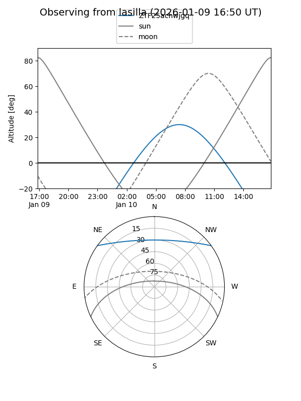

ZTF25achwjgq
Target ZTF25achwjgq at 2025-12-18 11:18
Aliases and brokers:
FINK: fink-portal.org/ZTF25achwjgq
Lasair: lasair-ztf.lsst.ac.uk/objects/ZTF25achwjgq
ALeRCE: alerce.online/object/ZTF25achwjgq
alt names
ZTF25achwjgq (ztf,fink_ztf)
Coordinates:
equatorial (ra, dec) = 149.8380,+30.78575
equatorial (HMS+DMS) = 09:59:21.11,+30:47:08.70
galactic (l, b) = (196.8364,+52.40721)
Photometry
last ztfg=20.46
1 ztfg detections
Lightcurve

Visibility


Additional plots